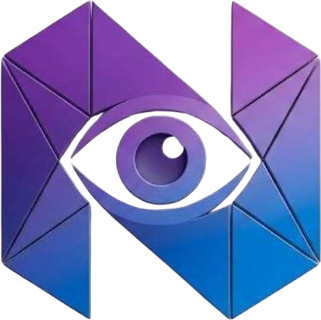

NitroVisionLast updated: 6 November 2026
This notice covers the NitroVision website, the NitroVision Stremio add-on and the NitroVision TV app for Google TV and Android TV. In short, we don't know who you are, and we don't track what you do.
NitroVision is a free, independent project. It isn't a company. It isn't affiliated with Stremio, TMDB, JustWatch or any streaming service.
On your TV only. NitroVision TV keeps your profiles (names and pictures), your countries, services and live channels, your rows and their order, your background, your Watchlist and what you've recently opened, and the Idle screen's settings (your town for the weather and your bin day). It's stored only on that TV and never sent to us. Uninstalling the app deletes it.
The family to-do list and events. You add these from a phone by scanning the code on the Idle screen, which opens a secure page on the NitroVision add-on. What you type (the to-do or event, and an optional name) waits on our server, in memory only, until your TV collects it: within a few seconds while NitroVision is open on the TV, and it is deleted then. Anything not collected within an hour is deleted anyway. It is never written to disk, logged or shared, and nothing about your phone is kept. Once collected, the list is stored on the TV only; you tick things off on the TV. Settings → Idle screen → New link stops older phones from adding to it.
Parent PIN from a phone. When NitroVision TV asks for the parent PIN, you can type it on the family phone page instead of on the TV, so nobody watching sees it. The PIN travels the same way as a to-do: it waits on our server in memory only until your TV collects it a few seconds later, and is deleted then (or after an hour at most). The add-on never checks or keeps it; only the TV checks it. It is never written to disk, logged or shared.
Browse on your phone. On the family phone page you can search for a title, open it on the TV, add it to the Watchlist of whoever is on the TV, or switch the TV to its child profile. What you search for is sent to TMDB to find matching titles and isn't kept. The title you pick (or the switch) travels to the TV the same way as a to-do, and the Watchlist stays on the TV only.
Parental controls. The parent PIN, each profile's age limit and the daily viewing time limit (with how many minutes have been watched today) are kept on the TV only and never sent to us. To hide titles above an age limit, the TV sends the add-on just the age rating to filter by (such as "12"), the same way it sends your countries and services; nothing about who is watching.
In your Stremio install link. Your countries, services and rows are encoded in the add-on link you install in Stremio. The add-on reads them from each request to know what to show. It doesn't save them.
Anonymous feedback counts. When you send a report from the website or the app's Report a problem button, we keep only the service, the title (if you chose one), what happened, the app version or "website", and the day. Reports are added up as counts in a private GitHub repository. There's no IP address, device detail or exact time in them. They're reviewed monthly and kept for 6 months at most.
Anonymous daily totals. The add-on adds up how many requests it answers each day, by kind only: add-on installs and updates, rows loaded, Watch Now lookups, recommendations, and update checks from NitroVision TV (with the app's version number). Only the totals are kept, in the same private GitHub repository. Nothing about who sent a request is recorded: no IP address, no device, no titles, no settings and no exact time. GitHub also counts how many times each app download is fetched.
Under UK GDPR and EU GDPR you can ask what personal data we hold about you, and ask us to correct or delete it, or to stop using it. Because we don't collect personal data, there's normally nothing to find. Your settings live on your own TV, and feedback counts can't be linked to you.
For privacy questions, open an issue on GitHub. Issues there are public, so please don't include personal details. You also have the right to complain to your data protection authority (in the UK, the ICO).
NitroVision isn't aimed at children, and we don't knowingly collect anything from them. A child profile in NitroVision TV exists only on that TV, like any other profile.
If this notice changes, we'll update it here and change the "Last updated" date at the top.